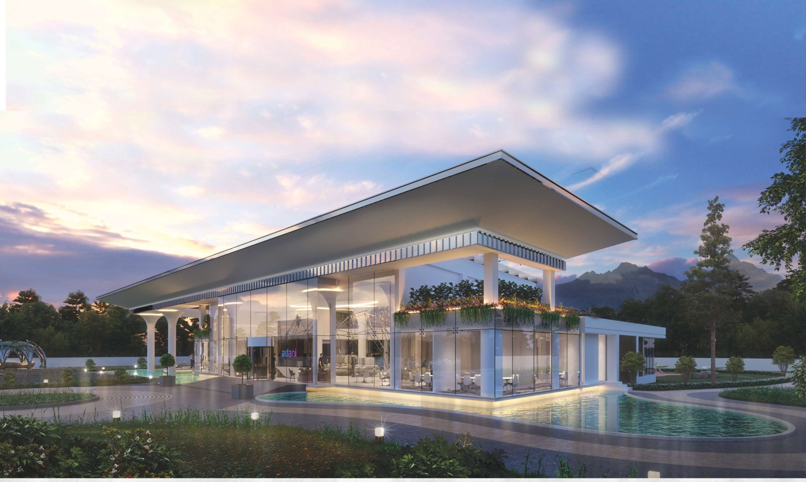

Work / 02 · Practice
Amar Tendulkar Architects
A clubhouse and a sales pavilion worked on during an architectural internship.

- Type
- Architectural internship
- Dates
- Jan – Apr 2023
- Office
- Amar Tendulkar Architects
- Role
- Architectural intern
- Work
- Concept presentations, schematic details, construction documentation, material specifications, site visits
- Images
- Renders by Amar Tendulkar Architects
During the internship she worked on project deliverables at several stages: concept presentations, schematic details, construction documentation and material specifications. Site visits showed how construction methods are resolved on site and how projects run at different levels, with some exposure to client engagement.
The projects below are from her professional practice portfolio for the internship. The design and the renders belong to the office and are shown with credit.
01Aqua Front Club, Central Park, Gurgaon
Architecture design for a clubhouse set beside water.
02Adani Sales Pavilion, Navi Mumbai
A sales pavilion beside a pool under a deep, cantilevered roof.

